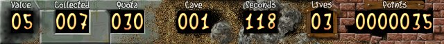

Controlling
Jim
Jim can be moved around with the arrow keys
or a joystick(you can select Joystick Control
in options). You can use the space key or
joystick
button in conjuction with the directions to remove a piece of dirt
or a diamond without actually going there.
Game
objectives
To complete a cave Jim has collect a certain number of Diamonds
and get to the Exit Door
before the time runs out.
How
to play
Several dangers lurks in the caves. Firstly you
have to be careful not to be hit by falling objects such as boulders or
diamonds. You'll also want to watch out for the other creatures roaming
the caves such as Protozos and Aggressors to mention a few who will kill
you if you run into them. The objective of the game is to collect diamonds
and you'll have to get a certain amough(the quota) to be allowed to leave
a cave. Extra diamonds(the ones collected when you have already filled
your quota) is often more valueable when it comes to points. An extra life
is provided for each 500 points. More detailed information about the various
game elements are availible in the Enviroment
Section. Nifty solutions for specific situations can be found in the
Tips
and Tricks section.
The
Panel

The panel at the bottom of the screen provides useful information while
playing.
Keyboard
referance
Arrows
: Move Jim.
Space
: Grab without moving.
Tabulator :
Commit suicide.
P
: Pause game.
Escape
: Return to main menu.